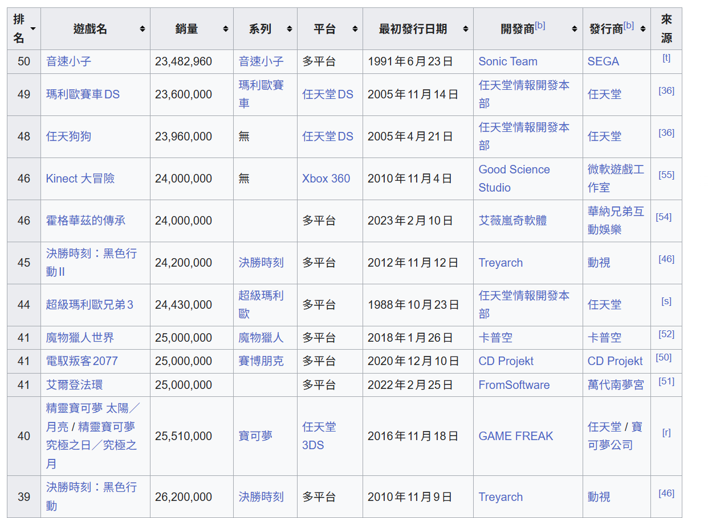
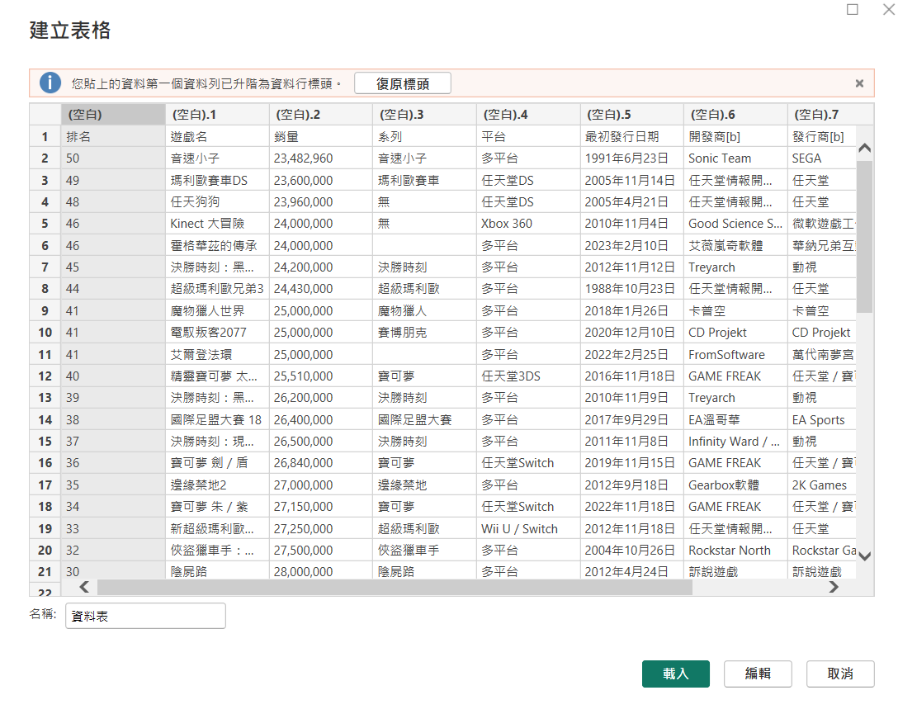
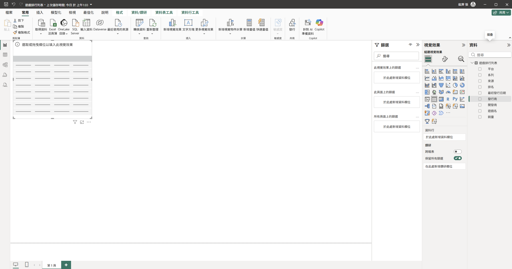
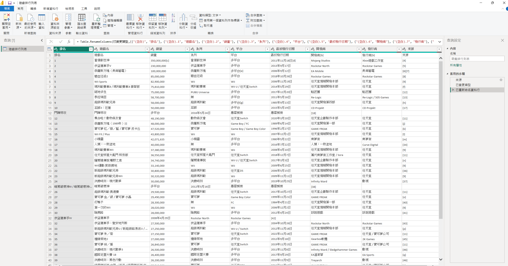

學號：112111136 (學號和姓名都要寫)
姓名：張紘齊
Ans:
本實作完全對照 Topic 4 投影片 p. 8 - p. 12 之流程規範，捨棄投影片使用之人口資料，改採維基百科之「暢銷電子遊戲列表」網頁進行資料直接輸入、模型載入與進階 Power Query 編輯實作。
Ctrl + C 進行複製。
Ctrl + V 將剛才從維基百科複製下來的暢銷遊戲數據全數貼上。全球暢銷電子遊戲表。
全球暢銷電子遊戲表 物件，確認從 Wikipedia 擷取過來的欄位（如：遊戲名、系列、平台、發行商、銷量等）已經完好無損地列在右側，可直接用於後續的視覺化圖表拉取。
